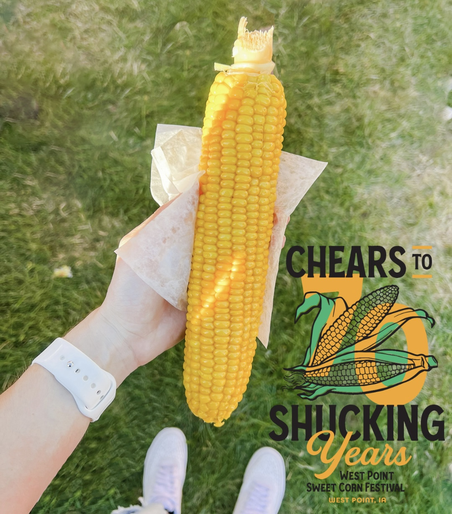

Sweet Corn Festival: 70 Shucking Years
August 12th, 2023
Celebrating 70 Years of West Point, IA Sweet Corn Festival
This year West Point, Iowa celebrates its 70th anniversary of the Sweet Corn Festival. What started as a small, local gathering has blossomed into a grand celebration of community spirit and agricultural pride.
A Sweet Start
The Sweet Corn Festival has humble beginnings. It all started in 1952 when a generous local farmer donated around 50 bushels of sweet corn to the community. The corn was boiled in a lard pot from the town’s locker plant and served alongside steak cooked on grills fashioned from halves of 55-gallon barrels. This simple, yet heartfelt gesture marked the beginning of what would grow into a cherished annual event.
A Tradition Grows
As the festival gained popularity, it evolved into the vibrant celebration it is today. One notable tradition that has endured is the use of an antique steam engine to cook the sweet corn. Donated in the mid-1980s, this steam engine has become an integral part of the festival, cooking approximately 16 tons of sweet corn each year—and the number is only growing. The corn is served free to festival attendees, embodying the spirit of community and generosity.
Event Highlights
This year’s Sweet Corn Festival was filled with excitement and activities:
Sweet Corn Feast: The festival's main attraction remains the endless supply of sweet corn. Visitors savored the delicious, freshly cooked corn, a testament to decades of festival tradition.
Sweet Corn Feast: The festival's main attraction remains the endless supply of sweet corn. Visitors savored the delicious, freshly cooked corn, a testament to decades of festival tradition.
Live Entertainment: Attendees enjoyed a diverse lineup of live music and performances, adding a lively soundtrack to the festival’s festivities.
Parade: The event kicked off with a colorful parade featuring floats, marching bands, and community groups, showcasing local creativity and pride.
Carnival Rides and Games: The carnival provided fun for all ages, from thrilling rides to classic games.
Crafts and Vendors: Festival-goers had the chance to browse unique crafts and vendor stalls, offering everything from handmade goods to festival treats.
Family Fun: Activities like face painting and bounce houses made the festival a hit with families.
Community Spirit
The Sweet Corn Festival is more than just an event; it’s a celebration of the West Point community. It’s a time for locals and visitors alike to come together, enjoy good food, and share in the community spirit that has defined the festival for 70 years. The festival also supports various local projects and initiatives, reinforcing the town’s commitment to giving back.
Join the Celebration
If you missed this year’s celebration, mark your calendar for next year’s Sweet Corn Festival in West Point, Iowa. It’s an event filled with tradition, delicious food, and community joy. For more details on the festival schedule and activities, visit the official Sweet Corn Festival website or follow their social media pages. You don't want to miss it!